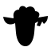
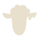
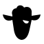
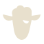
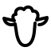
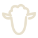

01
THE OUTLIER


Leave the herd.
A dense wool crown. A long, quiet face. One broken tag cuts into the right ear. No expression needed.
UNFARMD
NOT FOLLOWING THE HERD.
Three original marks. One independent spirit.
Black, bone and nothing to hide behind.
View The Outlier final refinement →
Exploration only · not a public rebrand or trademark clearance


A dense wool crown. A long, quiet face. One broken tag cuts into the right ear. No expression needed.


A single half-lidded eye puts doubt into the silhouette. The attitude is quieter than the mascot; the eye is deliberately secondary.


One open contour, one interrupted ear. The line flows from the tag break, over the wool and around the face. No detached features.
RECOMMENDED PRIMARY
Silhouette first. Personality in the break. The solid construction carries the existing wordmark without competing with it.
The Skeptic is the expressive alternative. The Escape is a larger-format editorial option. Review all three at native pixel sizes below the large symbols; detail loss matters.